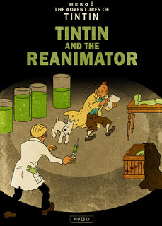

Tintín y los Dioses Primigenios
Tintín, los susurros en la oscuridad
Tintín, desde el más allá
Tintín en Insmouth
Tintín y el Reanimator
Tintín y el Horror de Dunwich
Tintín y la Sombra más allá del tiempo
Tintín en las Montañas de la Locura
